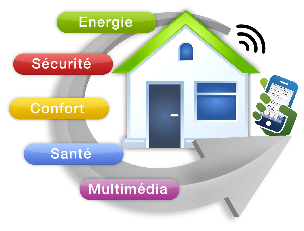
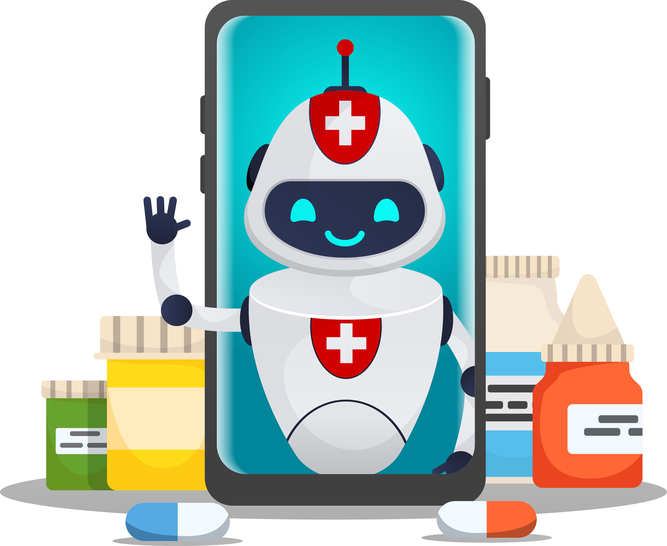

SINDZE WAFFO MARC DONALD
Bonjour.
Bienvenue sur ma plate forme pour des services et une experience en connaissance informatique

Hello! je me prenom Marc Donald de nationaliter camerounaise je suis programmeur et developpeur en informatique et ici je propose des projet qui pourront revolutionner la technologie autour de notre quotidient. l'un de ces projet est la maison intelligente. La maison intelligente est un projet deja utiliser dans des pays ayant un niveau de technologie avancer mais en afrique cela n'est pas encore le cas cest un projet a long terme qui nous permetra de gerer notre quotidient a la maison tout en assurant la securiter de la totaliter de la maison .
 voir le projetIci il s'agit d'un deuxieme projet qui est tout autant attrayant que le premier il s'agit ici de simuler un bot virtuelle qui nous aide dans notre quotidient et qui est adapter a n'importe quelle surface numerique que nous utilisons(ordinateur,tablette , smart-phone etc...) Ce bot aura access a notre santer vue qu'il sera inter-connecter a notre poux du poignet grace a un bracelet electronique , en cas d'iregulation dans notre santer , ce dernier envera un signal d'alerte dependent du niveau de malaise . palu : il proposera des medicaments adequat pour cette maladie . simple fievre :proposera des solution et un bilans de santer complet ainsi que la raison de l'evanouissement . fatigue : vous proposera une solution pour evacuer la fatigue. et au quottidients vous donnera des astuces pour mieux vous porter et pour gerer votre taut de glycemie
 voir le projet
.jpg)
.jpg) https://inscrit toi.com
https://inscrit toi.com
Decouvrex la puissance du langage python.Apprenez a creer des applications et des scripts automatiques.
En savoir plus
Plongez dans le monde de l'analyse de donnes avec des outils comme python, SQL et Tableau.
En savoir plus....Nous vous offrons aussi l'opportuniter de nous faire part de vos idee et de participer a nos projet de developpement. chez MC-DO aucune idee n'est mise a lecart joigner nous sur nos differentes plate-formes pour en savoir plus.....